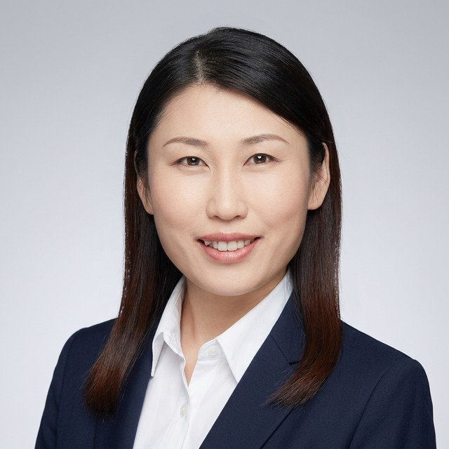
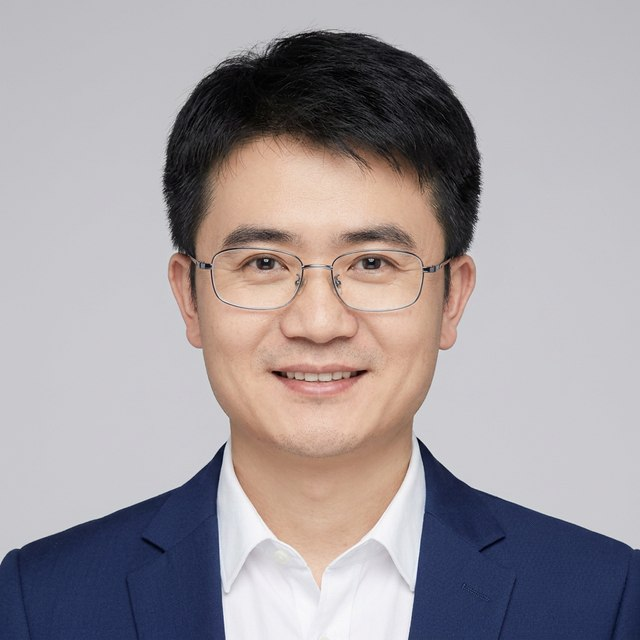

{{ t.home.eyebrow }}
{{ t.home.lede }}
{{ t.home.whyNowP1 }}
{{ t.home.whyNowP2 }}
{{ t.home.aboutNote }}
{{ t.home.ctaP }}
{{ t.vision.eyebrow }}
{{ t.vision.lede }}
{{ t.vision.longP }}
{{ t.vision.shortP }}
{{ t.science.eyebrow }}
{{ t.science.lede }}
{{ t.science.pillar1P }}
{{ t.science.pillar2P }}
{{ t.science.pillar3P }}
{{ t.science.validatedP }}
{{ t.science.mechanismP }}
{{ t.science.candidatesP }}
{{ t.science.marketP }}
{{ t.science.beyondP }}
{{ t.science.note }}
{{ t.pipeline.eyebrow }}
{{ t.pipeline.lede }}
{{ t.pipeline.bettingP }}
{{ t.pipeline.ipP }}
{{ t.pipeline.note }}
{{ t.team.eyebrow }}
{{ t.team.lede }}
{{ t.team.tierCore }}
{{ t.team.nameGuodong }}
{{ t.team.titleGuodong }}
{{ t.team.bioGuodong }}

{{ t.team.nameNingning }}
{{ t.team.titleNingning }}
{{ t.team.bioNingning }}
{{ t.team.nameSonglin }}
{{ t.team.titleSonglin }}
{{ t.team.bioSonglin }}
{{ t.team.nameHuiliang }}
{{ t.team.titleHuiliang }}
{{ t.team.bioHuiliang }}
{{ t.team.tierExec }}
{{ t.team.nameKan }}
{{ t.team.titleKan }}
{{ t.team.bioKan }}
{{ t.team.nameQuan }}
{{ t.team.titleQuan }}
{{ t.team.bioQuan }}

{{ t.team.nameJun }}
{{ t.team.titleJun }}
{{ t.team.bioJun }}
{{ t.team.nameJianbei }}
{{ t.team.titleJianbei }}
{{ t.team.bioJianbei }}
{{ t.team.nameFangfang }}
{{ t.team.titleFangfang }}
{{ t.team.bioFangfang }}
{{ t.team.tierAdvisors }}
{{ t.team.nameChangqing }}
{{ t.team.titleChangqing }}
{{ t.team.bioChangqing }}
{{ t.team.nameQiong }}
{{ t.team.titleQiong }}
{{ t.team.bioQiong }}
{{ t.team.note }}
{{ t.partner.eyebrow }}
{{ t.partner.lede }}
{{ t.partner.missionP }}
{{ t.partner.ask1P }}
{{ t.partner.ask2P }}
{{ t.partner.ask3P }}
{{ t.partner.address }}
{{ t.partner.hiringP }}
{{ t.partner.job1P }}
{{ t.partner.job1Loc }}
{{ t.partner.job2P }}
{{ t.partner.job2Loc }}
{{ t.partner.job3P }}
{{ t.partner.hiringNote }} hufangfang@drugbridge.com